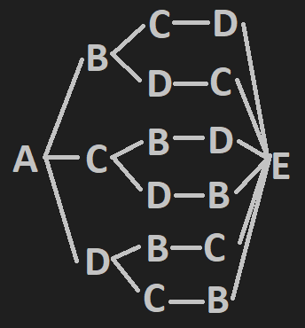

GitHub Repo
This allows users to input a grocery list and generates the closest path through the store to get all the desired items.
This project was originally attempted in Java at HackOHI/O 2019. The project was scrapped and restarted afterwards.
Planned UI flow:
Find closest path using A* with multiple goals
Technologies:
Shortest path algorithm:
A* doesn't support intermediate goals. The A* algorithm made by EinarUeland supports multiple goal nodes, terminating
when it reaches the closest goal node. A layered implementation was made to allow for intermediate goal nodes. The
basic idea is to keep a vector of goal nodes. Each time the algorithm runs, the goal node that is reached is
removed from the vector, and the algorithm is run again, this time with a shorter list of goal nodes. This process
is repeated until the vector of goal nodes is empty.
A problem with this implementation was that it doesn't allow for a specified ending node (the cash register). This
cannot be remedied using this implementation, so a different approach is needed. Currently, the plan is for a more
brute force style of approach, where the paths between each pair of nodes is calculated. The smallest sum is taken as
the shortest path. To be more concrete, here is an example.
ABCDE, where A is the beginning and E is the end. The following pairs are calculated with A*: AB, AC, AD, BC, BD, CD,
BE, CE, and DE. Then, the lengths of the simple paths from A to E are found by addition.
